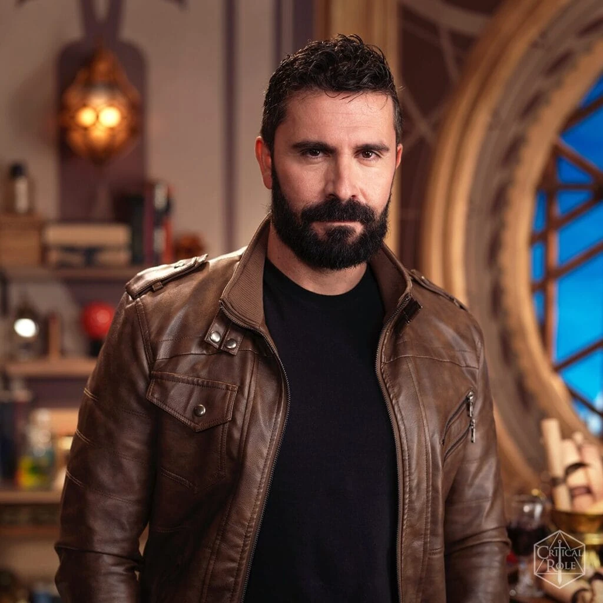

Luis Carazo

Luis Carazo (né Luis Enrique Carazo-Velez à Carthagène, en Colombie) est un acteur américano-colombien basé à Los Angeles. Il est principalement connu pour ses rôles à la télévision et son implication majeure dans l'univers des jeux de rôle sur table (actual play), notamment au sein de Critical Role.